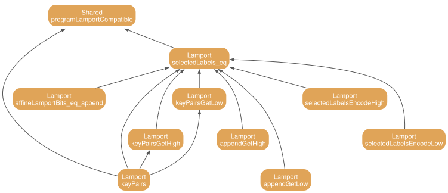

4 Lamport compatibility
The root is definition 78. The input labels \(\mathsf{Encode}(\mathsf{ek}, \pi )\) are exactly the Lamport signature of the bits of \(\pi \) under the key pairs of \(\mathsf{ek}\), as the locking scripts of Eqs. 15–16 require. Figure 4.1 shows the proof tree.

4.1 Statements from the paper
The input labels produced by \(\mathsf{Encode}\) are revealed on-chain. The Prover commits to \(\pi \) by a Lamport signature on the bits \(\mathbf{b}\) of its affine coordinates, and the input labels of the garbled circuit are exactly the Lamport signatures of \(\mathbf{b}\) under the encoding key \(\mathsf{ek}\): for the bit \(x_i(\pi )\) the label is \(L^{x_i(\pi )}_{x,i}\) and for the bit \(y_i(\pi )\) the label is \(L^{y_i(\pi )}_{y,i}\). Formalized by ??.
For a Lamport public key \(\mathsf{lpk} = (\mathsf{lpk}^0_i, \mathsf{lpk}^1_i)_{i \leq \ell }\), the script \(\mathsf{CheckLampSig}(\mathsf{lpk}) = \bigwedge _{i=1}^{\ell } \big( \mathsf{HashLock}(\mathsf{lpk}^0_i) \lor \mathsf{HashLock}(\mathsf{lpk}^1_i) \big)\) requires a Lamport signature on some message, and \(\mathsf{CheckLampSigsMatch}(\mathsf{lpk}_A, \mathsf{lpk}_B) = \bigwedge _{i=1}^{\ell } \big[ (\mathsf{HashLock}((\mathsf{lpk}_A)^0_i) \land \mathsf{HashLock}((\mathsf{lpk}_B)^0_i)) \lor (\mathsf{HashLock}((\mathsf{lpk}_A)^1_i) \land \mathsf{HashLock}((\mathsf{lpk}_B)^1_i)) \big]\) requires signatures under both keys on the same message. In ArgoMAC the message is \(\mathbf{b}\) with \(\ell = 508\) bits, and the key pairs are the labels \((L^0_{x,i}, L^1_{x,i})\) and \((L^0_{y,i}, L^1_{y,i})\). Formalized by ??.
4.2 Lean statements
The Lamport secret key of \(\mathsf{ek}_3\). Slot \(i {\lt} 254\) holds \((L^0_{x,i}, L^1_{x,i})\) and slot \(i \geq 254\) holds \((L^0_{y,i-254}, L^1_{y,i-254})\).
\(\mathsf{Encode}_3(\mathsf{ek}_3, \mathbf{b}) = \{ L^{x_i(\pi )}_{x,i}, L^{y_i(\pi )}_{y,i}\} _{i {\lt} 254}\) equals the Lamport signature of the bits \(\mathbf{b}\) of \(\pi \) under the key pairs.
Rewrite \(\mathbf{b}\) as an append with theorem 81. Compare index by index. For \(i {\lt} 254\) use theorem 82, theorem 83, and theorem 84. For \(i \geq 254\) use theorem 85, theorem 86, and theorem 87.
The bit decomposition \(\mathbf{b}\) of \(\pi \) is the \(254\) bits of \(y(\pi )\) appended to the \(254\) bits of \(x(\pi )\).
Compare the natural values. The appended value is \(y(\pi )\) shifted by \(254\) bits or \(x(\pi )\). Both coordinates are below \(2^{254}\), so no reduction occurs.
For \(i {\lt} 254\), bit \(i\) of the appended vector is bit \(i\) of the low vector.
The bit of an appended vector below the low width reads the low vector.
For \(i {\lt} 254\), label \(i\) of \(\mathsf{Encode}_3(\mathsf{ek}_3, \mathbf{b})\) is \(L^{x_i(\pi )}_{x,i}\).
Unfold the selected labels and the encoding. The low index selects the \(x\) coordinate encoding.
For \(i {\lt} 254\), key pair \(i\) is \((L^0_{x,i}, L^1_{x,i})\).
Unfold the key pairs. The low index selects the \(x\) item.
For \(i \geq 254\), bit \(i\) of the appended vector is bit \(i - 254\) of the high vector.
The bit of an appended vector at or above the low width reads the high vector at \(i - 254\).
For \(i \geq 254\), label \(i\) of \(\mathsf{Encode}_3(\mathsf{ek}_3, \mathbf{b})\) is \(L^{y_{i-254}(\pi )}_{y,i-254}\).
Unfold the selected labels and the encoding. The high index selects the \(y\) coordinate encoding at \(i - 254\).
For \(i \geq 254\), key pair \(i\) is \((L^0_{y,i-254}, L^1_{y,i-254})\).
Unfold the key pairs. The high index selects the \(y\) item at \(i - 254\).